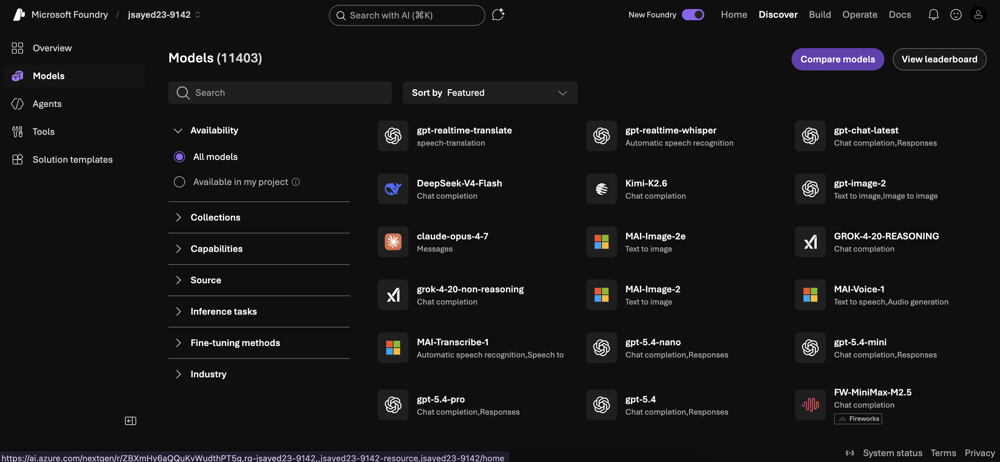

Microsoft
Microsoft Foundry
Case Study

Case Study
Project · Context
Microsoft Foundry is Microsoft's enterprise AI platform on Azure. Developers go there to build agents and pick from 11,000+ models.
UX research and design on two surfaces: the Models page and the agent creation page. End-to-end across both.
Heuristic eval · conducted 8 moderated sessions · Dovetail synthesis · Nielsen severity scoring.
Solo Figma wireframes · 4 reusable components · vibecoded HTML + Tailwind prototype.
Project · The problem

Research · Users + 3 insights
8 moderated sessions · CS students, technical builders, AI-curious founders. Think Aloud scenario: "Help a baker optimize their recipe site with an AI agent."
Card sort showed developers rank region and capability above model names.
8/8 finished the scenario. Post-task sentiment skewed neutral to frustrated. The gap between usable and trusted.
Users compare by opening detail pages in tabs, losing context every time they navigate.
Research · The catastrophic finding
8/8 participants couldn't create an agent. The default guardrail wasn't assigned. Every session blocked.
Mid-session, no playbook. I let the participant struggle, logged every failure mode, then offered help.
I took the notes straight to engineering, and they shipped the hotfix off them.
"I don't know what this is, I got somewhere else altogether." Participant 1
Design · Key decisions
Inspired by competitive analysis of Hugging Face · Google Vertex AI · Amazon Bedrock · Optimizely Opal.
Design · Design progression

Pre-research exploration. Includes bets I'd later cut: Ask AI and a region blocker in onboarding.


Figma mid-fi. Region promoted, compare-tray persistent. Research-validated bets only.
HTML + Tailwind, vibecoded with Claude. Full interaction on next slide ↗
Outcome · Design system
Region, capability, provider, price: all in one persistent, collapsible panel.
Pinned to the top of the grid. Up to 3 models, expand to side-by-side.
Region, cost, latency, capability: all visible in browse, no click required.
Cost, context window, regions, "not available" warnings in one click.
Each built as a Figma component with variants + auto-layout · type, color & spacing tokens · documented inline for engineering. Handed off via annotated Figma file · zero translation meetings needed.
Outcome · Tradeoffs
From the sketch: the "What are you looking to build?" Claude panel with a full conversational flow.
I kept a lightweight "Ask AI" entry point at the top of the final design. The full chatbot didn't make it. Card sort showed developers filter-first by region and capability, not by chatting. Conversation was a higher-effort, lower-confidence bet.
From the sketch: "region blocker should be addressed in onboarding."
Onboarding is owned by a different team. Outside the 6-month window and the two surfaces I owned. Flagged for handoff, not chased.
Cutting honestly is the part of design I take most seriously. Shipping four half-baked features helps no one.
Outcome · Impact so far
Closing · For Zoox
Research → design → prototype → ship. Same vocabulary across every phase, no handoff loss. Built for solo-designer environments.
Component library → in-file documentation → HTML prototype. I speak engineering's vocabulary so the handoff doesn't reintroduce friction.
Engineers under time pressure at Foundry → fleet operators under time pressure at Zoox. Same restraint, same density discipline.